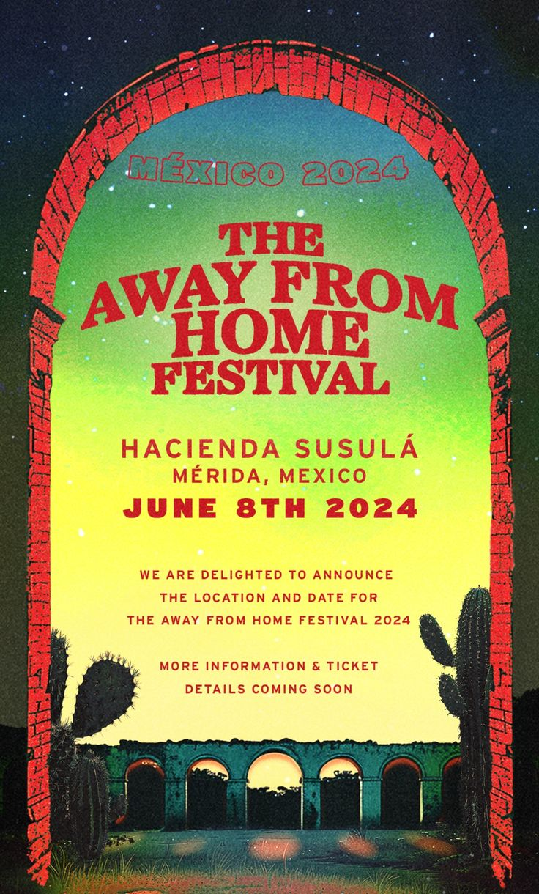

AFHF es un evento anual organizado por Louis Tomlinson que celebra la música en vivo y apoya a artistas emergentes. Iniciado en , este festival se destaca por su ambiente íntimo y su enfoque en la música independiente. El festival reúne una variedad de bandas y artistas que representan una gama de géneros musicales, proporcionando una plataforma para talentos emergentes y ofreciendo a los asistentes una experiencia musical única y personal. Se lleva a cabo en diferentes ubicaciones cada año, lo que permite a los fanáticos de diversas regiones disfrutar de este evento exclusivo.
Países en los que ha estado
-
Primera edicion Londres (2022)
.jpg)
La primera edición del Away From Home Festival fue gratuita y se centró en apoyar a bandas emergentes, brindándoles una plataforma para darse a conocer y posicionarse en el mercado musical
-
Segunda edición España (2022)
.jpg)
La segunda edición del Away From Home Festival se llevó a cabo en España en 2022. Esta edición continuó con el enfoque de apoyar a bandas emergentes y ofrecer una experiencia cultural única.
-
Tercera edición Italia (2023)

La tercera edición del Away From Home Festival se celebró en Italia en 2023. Este evento siguió destacando a artistas emergentes y ofreció una plataforma para el desarrollo y la visibilidad en el mercado musical.
-
Cuarta edicion Mexico (2024)

La edición de México fue muy esperada. Se realizó en una hacienda al sur del país, en Mérida. Gran cantidad de fans viajaron para poder vivir esta experiencia única.